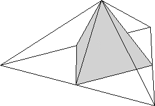
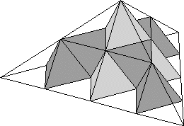
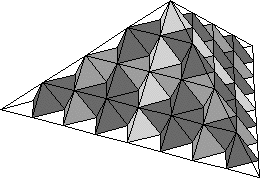
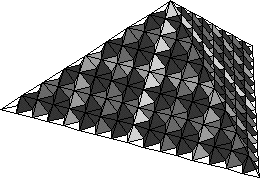

|  | |
 |
| stage 1 face | | stage 2 face |
| | | |
|  | |
 |
| stage 3 face | | stage 4 face |
|
| 4. As indicated by these pictures, and also seen from the model constructed,
the tip of the three faces of the tetrahedron of the stage 1 face is also the tip of the stage 3 face. |
| 5. Again from the pictures we see no point is higher than the tip of the three faces of the tetrahedron
of the stage 1 face. |
| 6. From the pictures above we see that faces of successive stages approach ever more closely
to the tetrahedron determined by the base triangle and the tip of the three faces of the tetrahedron
of the stage 1 face. |